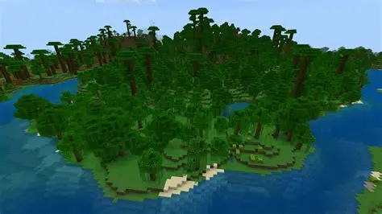
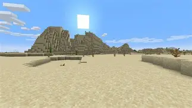

Jungle biom v Minecraftu patří mezi nejhustší a nejzelenější oblasti světa. Vyznačuje se vysokými stromy, liánami a bujnou vegetací, která ztěžuje viditelnost i pohyb. Hráči zde mohou najít jedinečné moby, jako jsou papoušci, oceloti nebo pandy, a také vzácné struktury v podobě džunglových chrámů. Díky množství bambusu, kakaa a dřeva je jungle biom bohatým zdrojem surovin, ale zároveň představuje výzvu kvůli své nepřehlednosti a vyšší koncentraci nepřátelských mobů ve stinných částech.

Pouštní biom v Minecraftu je suchá a vyprahlá oblast tvořená převážně pískem, pískovcem a kaktusy. Typické je pro něj horké klima, minimální vegetace a častý výskyt nepřátelských mobů zejména v noci kvůli absenci stromů a stínu. Hráči zde mohou objevit unikátní struktury, jako jsou pouštní chrámy a vesnice z pískovce, které často obsahují cenné loot truhly. Přestože působí nehostinně, poušť nabízí snadnou těžbu písku, přehledný terén a možnost získat vzácné předměty právě díky zdejším stavbám.